Hyunrae Kim
I am a junior at Washington University in St. Louis pursuing a major in Computer Science with a minor in Mathematics. I am currently spending a semester abroad at the Hong Kong University of Science and Technology. This page primarily serves as a portfolio page for COMP4461 Human-Computer Interaction.
Barvel
 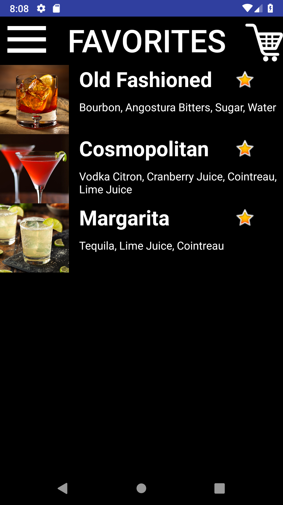
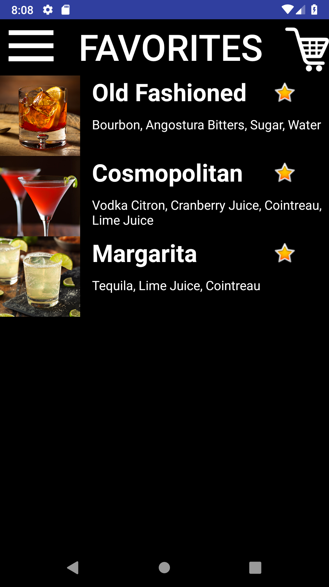
Introduction
Work/Thought Process | Demo
Props to Kevin for an awesome video!
Issues | Solutions | Design Considerations
-
Because the app will be used in a dark setting, we used black backgrounds and other dark colors for app elements.
-
Assuming that most customers will have a drink or two, we implemented large buttons with images for slightly intoxicated customers to navigate through the app. In addition, we increased the default toolbar size.
-
Added a text box for any notes to the bartender along with main customizations so users can express smaller details. important for customeres with allergies or strong preferences.
-
A favorites tab so less hassle to order "the usual"
-
A history tab that not only serves as a receipt but a reminder of how much exactly he or she drank.
-
Push notification so users do not have to wait by the bar for their drinks.
-
Bars are usually pretty trendy so we went for a trendy but simple look for our app.
The Process: Design | Development

Our group, mostly having previous Android experience, chose to use Android Studio to design the app instead of using an app design software. However, being a 5-person project, we faced many issues with project configuration and version control. In addition, we faced many issues when it came to making small design changes, most notably increasing the cart icon on the toolbar. However, our group met up on many occassions for hours at a time to overcome the complications.
On our second meeting, we continued to discuss and answer key questions for the app. What were our target customers? What are the main needs we are fulfilling? What are the different design considerations that need to be made? On our third meeting, we drew out a storyboard of the app. Once again, we divided up the work to develop. Our fourth and final meeting was to address the fact that each of our pages did not have a cohesive theme or styling. We came together and made both style and intuitive changes to each of the pages.
 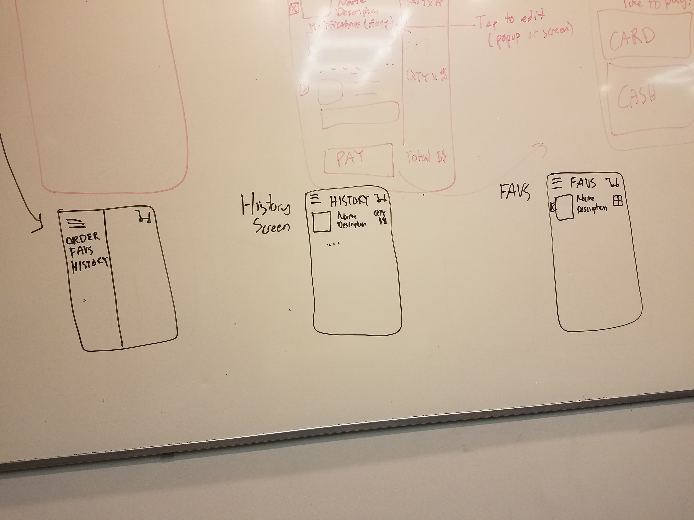
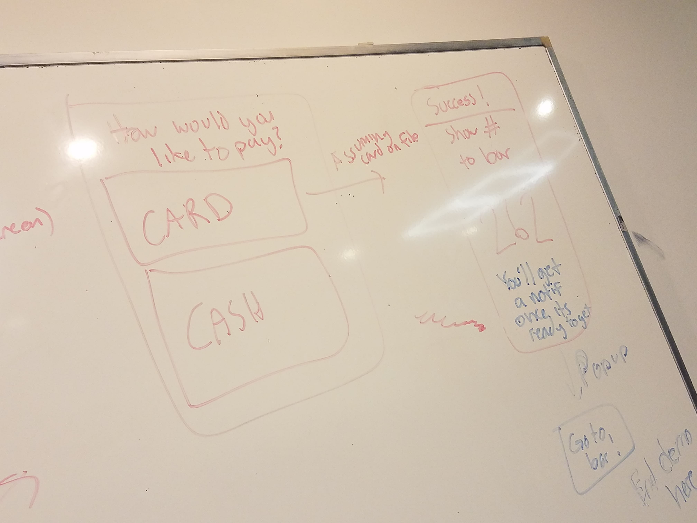
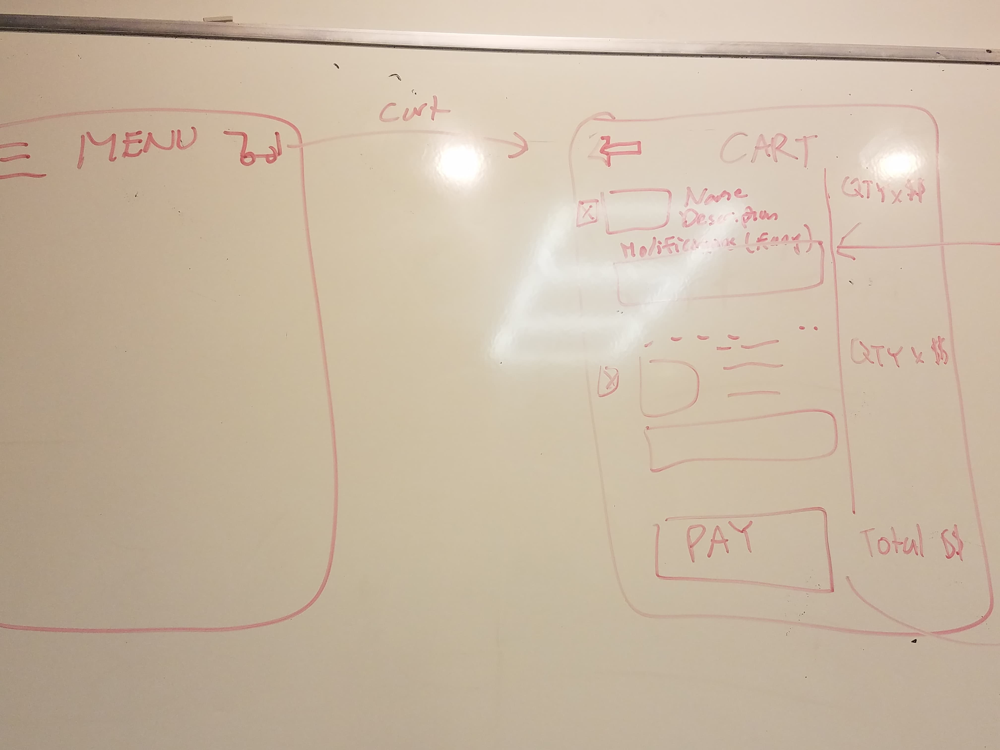
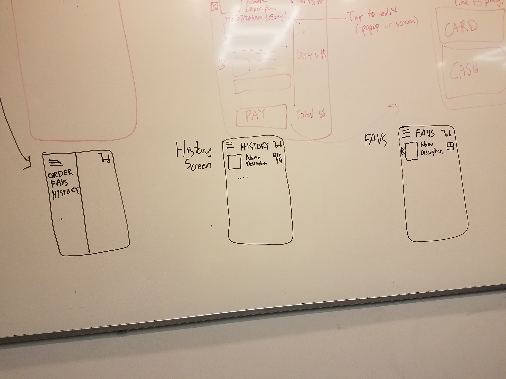
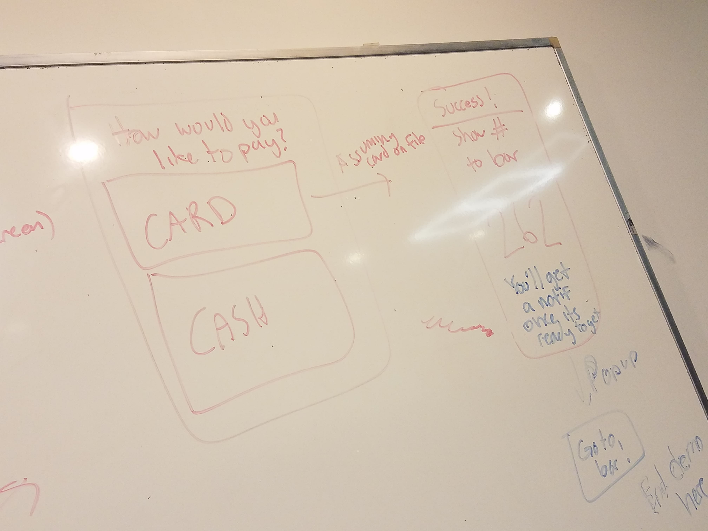
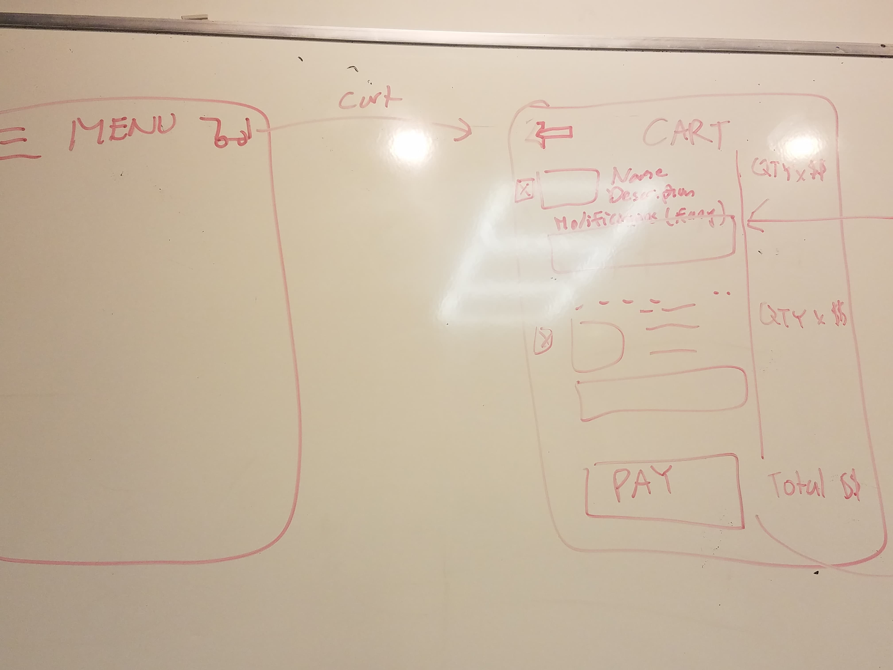
Overall, while we did develop outside group meetings, we worked mostly in a group meeting room. This way, we always had more than one pair of eyes on each page, leading to conversation and suggestions for improving the design. Also, dealing with merge conflicts in-person was key.
Finally...
I do think using a design software could have cut a lot of time that could be used to build other features and be more ambitious with our designs. Otherwise, I am satisfied with how the prototype and the presentation/video turned out.
MR App: Running
Demo
Introduction
POVs
-
Persona 1
- Demographics: Student who spends too long sitting in the library
- Attributes: Finds the gym boring and monotonous, but enjoys outdoor activities
- Goals: Get healthier, look better, and have fun exercising
-
Persona 2
- Demographics: Student who spends too long sitting in the library
- Attributes: Enjoys the gym but doesn’t enjoy cardio as much
- Goals: Maintain fitness but improve cardiovascular health
Interviews
We conducted interviews with three different HKUST students to get a general idea for their issue with exercise and running specifically. We asked each approximately 10 quesitons regarding their current health routine, whether they are looking to improve the health routine, what stops them from improving their health routine, their thoughts on running, and what make them find running more interesting. Below is a video compilation of key responses.
Brainstorm
We proceeded to brainstorm some ideas of features we were thinking of implementing via mind-map.
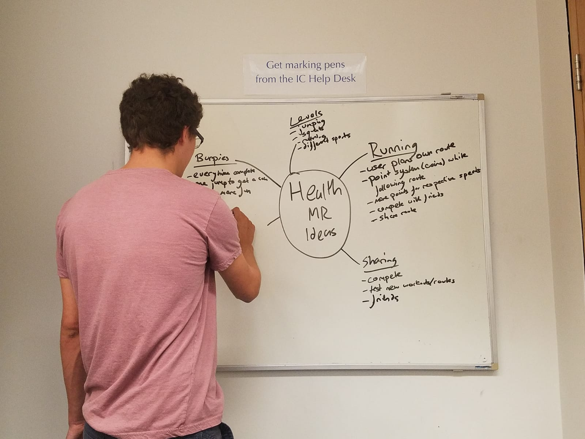Storyboards
We created two storyboards for each of the personas to demonstrate how each persona would be interested and could benefit from our ideas.
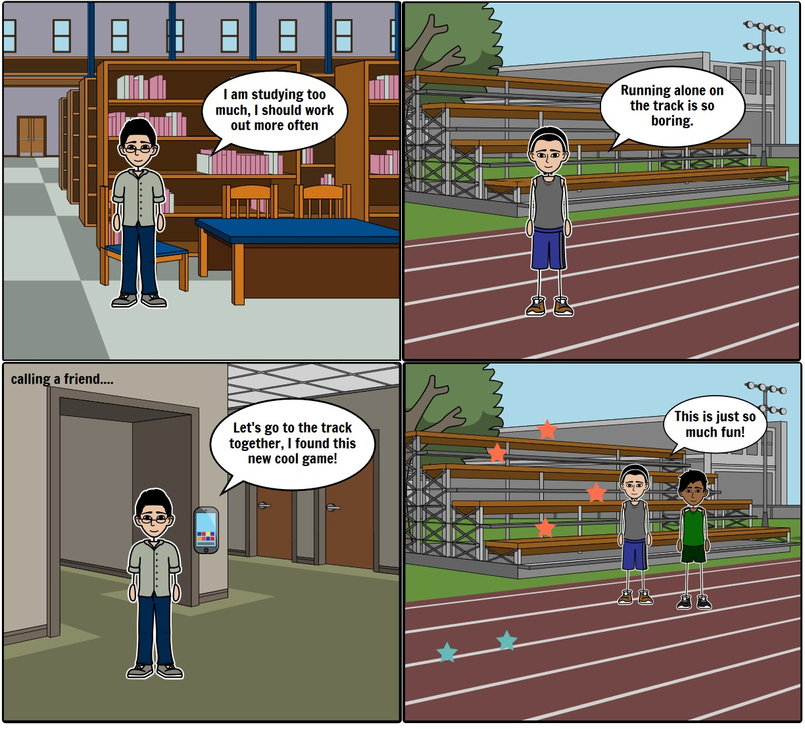 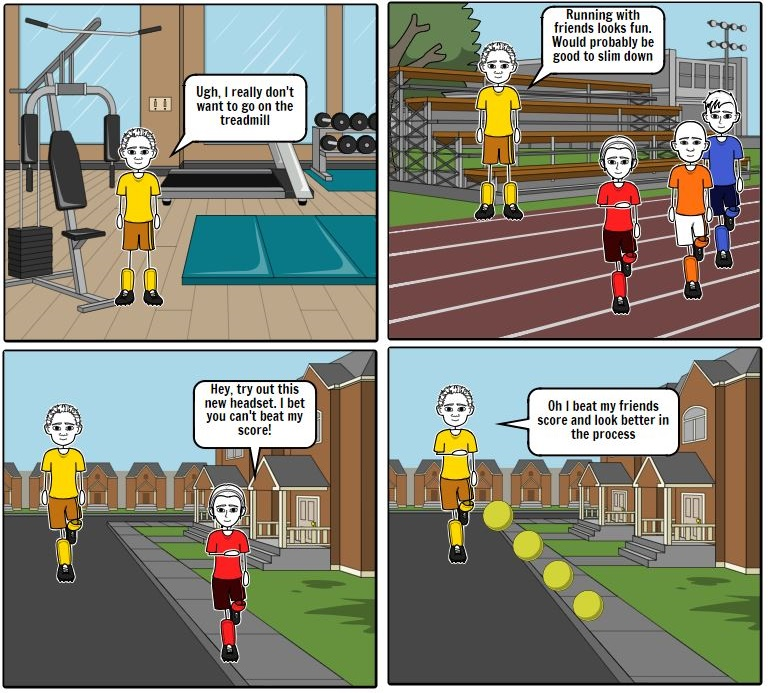Speed Dating
For the speed dating stage, we brought back our same interviewees and showed them our storyboards along with our idea for the app. The general feedback that we would get is that the idea was good and that they would be interested themselves in using the app. The only repeated criticism we received was regarding how they would run wearing a holokit, but our intended use case would regard the app being integrated with a pair of sports glasses/goggles.
Prototyping
Can't say too much about this portion of the process other than that Kevin and Michael did an awesome job working with Unity.
My Contributions
As a team, we were split into two teams. One for the ideation, empathy, and presentation and the other being the development team. For this project, I took a step back from development and was part of the first team. In addition to everything our team did, I was tasked with compiling together the interview videos and the prototype demo videos.